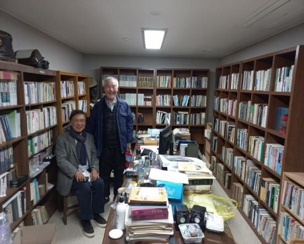

{{ t.bio.kicker }}
{{ t.bio.heading }}

{{ t.bio.paragraph }}
{{ fact.value }}
{{ fact.label }}
{{ t.early.kicker }}
{{ t.early.heading }}
{{ item.year }}
{{ item.title }}
{{ item.body }}
{{ t.peace.kicker }}
{{ t.peace.heading }}
{{ t.peace.paragraph }}
{{ role.title }}
{{ role.detail }}